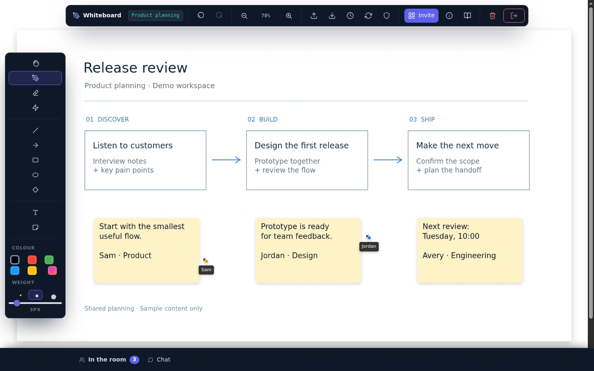
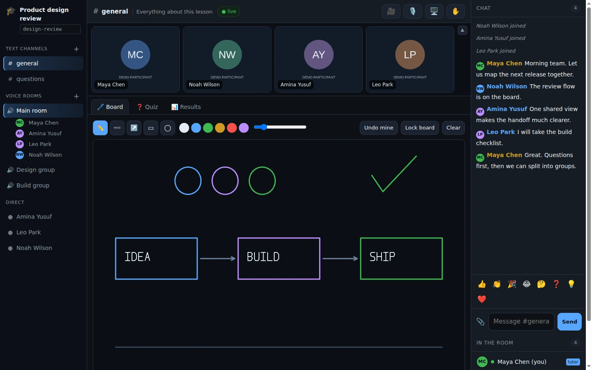
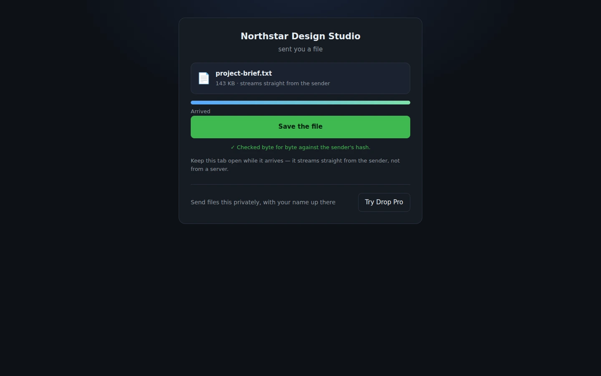
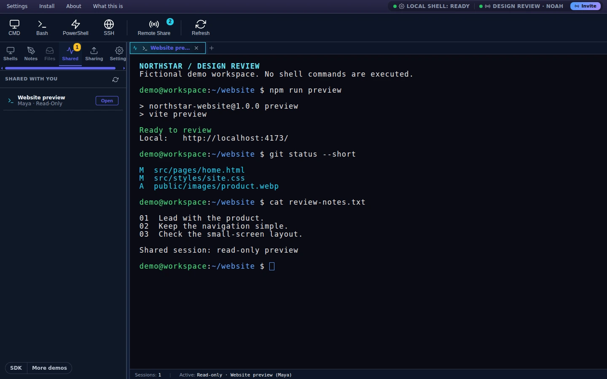
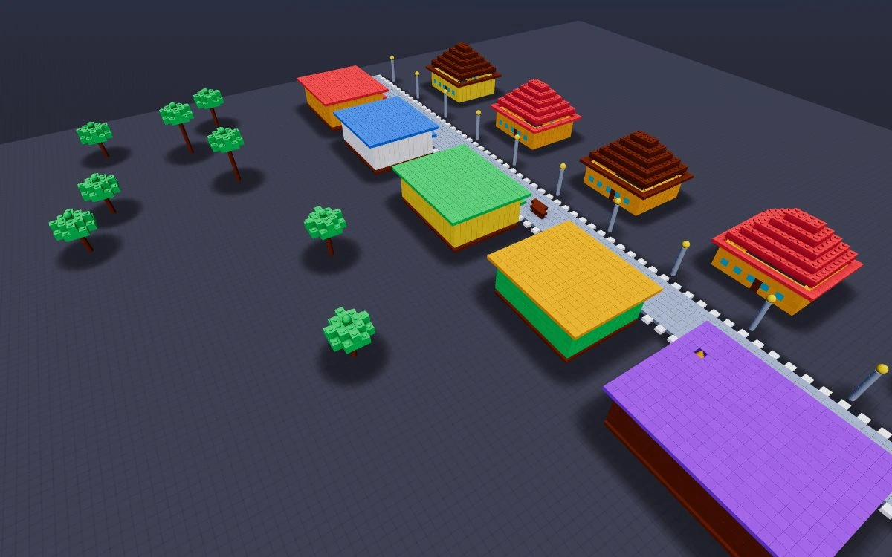

01
Channels & messaging
Broadcast to a room, address one client, or filter delivery. Use ephemeral messages for fast-changing state.
WebSocket + HTTP fallbackThe SDK for connected experiences
Shared workspaces. Live conversations. Connected devices. Bring them together with messaging, presence, WebRTC and channel storage.
Free during beta No credit card Open-source SDKs

One shared channel. Every participant in the loop.
Small pieces. Shared possibilities.
Compose what your app needs without building a separate connection for every feature.
Broadcast to a room, address one client, or filter delivery. Use ephemeral messages for fast-changing state.
WebSocket + HTTP fallbackKnow who is connected. Build participant lists, live cursors and join or leave notifications.
Peers + connection eventsSet up peer connections for calls and data, with hosted TURN/STUN relay support when a direct path is unavailable.
Media + data channelsSave shared state in a per-channel key-value store so the next participant can pick up where you left off.
JavaScript today · other clients in progressBuilt with the SDK
These are working applications, built on the same primitives you can use in your own product.

Communication
Bring a call, a shared board and your teammates into one workspace.

File transfer
Connect your devices and send files through a peer-to-peer data channel.

Developer tools
Open a shared browser terminal connected to your machine through the local service.
Messages and presence in one channel.
A focused peer-to-peer file demo.
Explore games and interactive examples.
Start building
Connect with a room name and password. Listen for messages. Give another client the same room details and start building together.
npm i @messaging-platform/web-agent-jsUse a temporary key in browser code. Keep your long-lived developer key on your server.
Read the complete setup guideLoad these in order, then use the JavaScript example without its import line.
<script src="https://hmdevonline.com/messaging-platform/sdk/generated-web-agent-js/js/web-agent.libs.js"></script>
<script src="https://hmdevonline.com/messaging-platform/sdk/generated-web-agent-js/js/web-agent.js"></script>import { AgentConnection } from '@messaging-platform/web-agent-js';
const api = 'https://hmdevonline.com/messaging-platform/api/v1/messaging-service';
const agent = new AgentConnection();
agent.addEventListener('message', ({ response }) => {
if (response.status !== 'success') return;
for (const message of response.data || []) {
if (message.type === 'chat-text') console.log(message.content);
}
});
agent.addEventListener('connect', ({ response }) => {
if (response.status === 'success') agent.sendMessage('Hello, room!');
});
agent.connect({
api, apiKey: 'your-temporary-api-key',
channelName: 'design-room', channelPassword: 'shared-secret',
agentName: 'user-' + crypto.randomUUID(), autoReceive: true
});import com.hmdev.messaging.agent.core.AgentConnection;
import com.hmdev.messaging.agent.core.ConnectConfig;
public class SharedRoom {
public static void main(String[] args) throws Exception {
var agent = new AgentConnection(
"https://hmdevonline.com/messaging-platform/api/v1/messaging-service",
"your-api-key");
if (agent.connect(ConnectConfig.builder()
.channelName("design-room")
.channelPassword("shared-secret")
.agentName("java-client")
.build())) {
agent.receiveAsync(events -> events.forEach(event ->
System.out.println(event.getContent())));
agent.sendMessage("Hello, room!");
}
}
}from hmdev.messaging.agent.core.agent_connection import AgentConnection
from hmdev.messaging.agent.core.agent_connection_event_handler import (
AgentConnectionEventHandler,
)
agent = AgentConnection.with_api_key(
"https://hmdevonline.com/messaging-platform/api/v1/messaging-service",
"your-api-key",
)
class RoomEvents(AgentConnectionEventHandler):
def on_message_events(self, events):
for event in events:
if event.get("type") == "chat-text":
print(event.get("content"))
if agent.connect(
channel_name="design-room",
channel_password="shared-secret",
agent_name="python-client",
):
try:
agent.receive_async(RoomEvents())
agent.send_message("Hello, room!")
input("Press Enter to leave the room.\n")
finally:
agent.disconnect()#include <iostream>
#include <map>
#include "hmdev/messaging/api/messaging_channel_api.h"
int main() {
hmdev::messaging::MessagingChannelApi api(
"https://hmdevonline.com/messaging-platform/api/v1/messaging-service",
"your-api-key");
auto connection = api.connect(
"design-room", "shared-secret", "native-client");
std::cout << connection.status << '\n';
}How it fits together
Your interface stays yours. The managed messaging service connects clients across runtimes and keeps their shared channel in sync.
Explore the architectureIssue short-lived keys from your server. Keep the long-lived developer credential out of browser bundles.
Private scope separates channels by developer. Public scope lets different developers join a shared room.
TLS for API traffic, DTLS for peer connections, and channel passwords hashed before sending.

There is room to play, too
Seven multiplayer games put live events, presence and shared state to work. Build a voxel world in BlockParty, then explore the rest of the playground.
Platform status
The platform is in active pre-production and free for development, testing and prototypes. APIs may change, uptime is not guaranteed, and we do not recommend production workloads today.
Current boundaries
Make something connected
Start with a key. Explore an example. Make it your own.